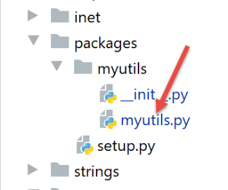

25. Exercício prático: versão 8
25.1. Introdução
Vamos escrever uma nova aplicação cliente/servidor. A novidade do servidor é que este irá gerir uma sessão. Em vez de colocar os dados da administração fiscal num objeto de âmbito [application], vamos colocá-los num objeto de âmbito [session]. Ao fazê-lo, o desempenho do código fica prejudicado. Quando um objeto pode ser partilhado em modo de leitura apenas por todos os utilizadores, é preferível torná-lo um objeto com âmbito [application] em vez de um com âmbito [session]. Ganha-se, no mínimo, em largura de banda, uma vez que se reduz assim o tamanho do cookie de sessão. Mas queremos mostrar uma aplicação cliente/servidor em que o cliente e o servidor trocam um cookie de sessão.
A arquitetura da aplicação não se altera:

25.2. O servidor web
A estrutura de diretórios dos scripts do servidor é a seguinte:

A pasta [http-servers/03] é obtida inicialmente através da cópia da pasta [http-servers/02]. Em seguida, procedem-se às alterações.
25.2.1. A configuração
É idêntica à da |versão anterior|, com algumas alterações no script [config]:
# dependências absolutas
absolute_dependencies = [
# pastas do projeto
# BaseEntity, MyException
f"{root_dir}/classes/02/entities",
# InterfaceImpôtsDao, InterfaceImpôtsMétier, InterfaceImpôtsUi
f"{root_dir}/impots/v04/interfaces",
# AbstractImpôtsdao, ImpôtsConsole, ImpôtsMétier
f"{root_dir}/impots/v04/services",
# ImpotsDaoWithAdminDataInDatabase
f"{root_dir}/impots/v05/services",
# AdminData, ImpôtsError, TaxPayer
f"{root_dir}/impots/v04/entities",
# Constantes, Faixas
f"{root_dir}/impots/v05/entities",
# index_controller
f"{script_dir}/../controllers",
# scripts [config_database, config_layers]
script_dir,
# Logger, SendAdminMail
f"{root_dir}/impots/http-servers/02/utilities",
]
- linha 17: vamos reescrever um controlador para a função [index] que processa o URL / ;
- linha 21: utilizamos os utilitários da |versão anterior|;
25.2.2. O script principal [main]
O novo script [main] introduz algumas alterações ao script principal [main] da versão anterior:
# a aplicação Flask pode ser iniciada
app = Flask(__name__)
# chave secreta da sessão
app.secret_key = os.urandom(12).hex()
- linha 4: cria-se uma chave secreta para a aplicação. Sabe-se que esta é necessária para gerir as sessões;
Em seguida, os dados fiscais já não são solicitados no código do [main]. As seguintes linhas são eliminadas:
# recuperação de dados da administração fiscal
erreur = False
try:
# admindata será um dado de âmbito da aplicação, apenas para leitura
config["admindata"] = config["layers"]["dao"].get_admindata()
# registo de sucesso
logger.write("[serveur] connexion à la base de données réussie\n")
except ImpôtsError as ex:
# registo do erro
erreur = True
# registo de erro
log = f"L'erreur suivante s'est produite : {ex}"
# consola
print(log)
# ficheiro de registos
logger.write(f"{log}\n")
# e-mail para o administrador
send_adminmail(config, log)
Além disso, o controlador [index_controller] aceita um parâmetro adicional, a sessão Flask:
from flask import request, Flask, session
….
# a consulta é executada por um controlador
résultat, status_code = index_controller.execute(request, session, config)
25.2.3. O controlador [index_controller]
O controlador [index_controller] gere agora uma sessão:
# importação de dependências
import os
import re
import threading
from flask_api import status
from werkzeug.local import LocalProxy
# URL configurado: /?casado=xx&filhos=yy&salário=zz
from AdminData import AdminData
from ImpôtsError import ImpôtsError
def execute(request: LocalProxy, session: LocalProxy, config: dict) -> tuple:
# dependências
from TaxPayer import TaxPayer
# inicialmente sem erros
erreurs = []
…
# erros?
if erreurs:
# é devolvida uma resposta de erro ao cliente
return {"réponse": {"erreurs": erreurs}}, status.HTTP_400_BAD_REQUEST
# sem erros, é possível continuar a trabalhar
# recuperamos a configuração associada ao thread
thread_name = threading.current_thread().name
logger = config[thread_name]["config"]["logger"]
# executa-se a consulta
réponse = None
try:
# o caso mais simples — o admindata já está na sessão
if session.get('client_id') is not None:
# recuperam-se as informações da sessão
client_id = session.get('client_id')
admindata = AdminData().fromdict(session.get('admindata'))
# registo
logger.write(f"[index_controller] client [{client_id}], données fiscales prises en session\n")
else:
# recuperação dos dados da administração fiscal
admindata = config["layers"]["dao"].get_admindata()
# início da sessão do admindata
session['admindata'] = admindata.asdict()
# atribui-se um número ao cliente e esse número é registado na sessão
# isto vai permitir-nos acompanhá-lo nos registos do servidor
client_id = os.urandom(12).hex()
session['client_id'] = client_id
# registo
logger.write(f"[index_controller] client [{client_id}], données fiscales prises dans la couche dao\n")
# cálculo do imposto
taxpayer = TaxPayer().fromdict({'marié': marié, 'enfants': enfants, 'salaire': salaire})
config["layers"]["métier"].calculate_tax(taxpayer, admindata)
# enviamos a resposta ao cliente
return {"réponse": {"result": taxpayer.asdict()}}, status.HTTP_200_OK
except (BaseException, ImpôtsError) as erreur:
# enviamos a resposta ao cliente
return {"réponse": {"erreurs": [f"{erreur}"]}}, status.HTTP_500_INTERNAL_SERVER_ERROR
- linha 14: o controlador recebe a sessão atual do cliente web;
- linhas 35-38: se o cliente tiver uma sessão, esta contém duas chaves:
- [client_id]: um número de cliente (linha 37);
- [admindata]: os dados da administração fiscal sob a forma de um dicionário (linha 38);
- linha 35: verifica-se se a sessão contém uma das duas chaves esperadas;
- linhas 42-51: caso em que a sessão do cliente ainda não tenha sido inicializada;
- linha 43: recuperam-se os dados da administração fiscal a partir da camada [dao];
- linha 45: estes dados são inseridos na sessão sob a forma de um dicionário;
- linha 48: atribui-se um número aleatório ao cliente. Este número será diferente para cada cliente;
- linha 49: este número é colocado na sessão;
- linha 51: regista-se o facto de os dados da administração fiscal terem sido obtidos através da camada [dao]. Os acessos à camada [dao] são, em geral, dispendiosos. É por isso que é necessário limitá-los. A ideia aqui é obter os dados fiscais uma única vez a partir da camada [dao], colocá-los na sessão e recuperá-los a partir daí em consultas posteriores do mesmo cliente. Recorde-se que esta não é a melhor solução. Sendo os dados fiscais da administração os mesmos para todos os clientes, o seu lugar é num objeto de âmbito da aplicação;
- linhas 35-40: caso em que a sessão do cliente tenha sido inicializada numa consulta anterior;
- linha 37: recupera-se o número do cliente na sessão;
- linha 38: recuperam-se os dados fiscais da administração na sessão;
- linha 40: regista-se o facto de o cliente ter obtido os dados fiscais da administração na sessão;
25.3. O cliente web

25.3.1. A camada [dao]
25.3.1.1. A classe [ImpôtsDaoWithHttpSession]
A camada [dao] é implementada pela seguinte classe [ImpôtsDaoWithHttpSession]:
# importações
import requests
from flask_api import status
from myutils import decode_flask_session
from AbstractImpôtsDao import AbstractImpôtsDao
from AdminData import AdminData
from ImpôtsError import ImpôtsError
from InterfaceImpôtsMétier import InterfaceImpôtsMétier
from TaxPayer import TaxPayer
class ImpôtsDaoWithHttpSession(AbstractImpôtsDao, InterfaceImpôtsMétier):
# construtor
def __init__(self, config: dict):
# inicialização do pai
AbstractImpôtsDao.__init__(self, config)
# armazenamento dos elementos de configuração
# configuração geral
self.__config = config
# servidor
self.__config_server = config["server"]
# modo de depuração
self.__debug = config["debug"]
# registo
self.__logger = None
# cookies
self.__cookies = None
# método não utilizado
def get_admindata(self) -> AdminData:
pass
# cálculo do imposto
def calculate_tax(self, taxpayer: TaxPayer, admindata: AdminData = None):
# deixa-se que as exceções sejam propagadas
# parâmetros do GET
params = {"marié": taxpayer.marié, "enfants": taxpayer.enfants, "salaire": taxpayer.salaire}
# ligação com autenticação Auth Basic?
if self.__config_server['authBasic']:
response = requests.get(
# URL do servidor consultado
self.__config_server['urlServer'],
# parâmetros do URL
params=params,
# autenticação Basic
auth=(
self.__config_server["user"]["login"],
self.__config_server["user"]["password"]),
cookies=self.__cookies)
else:
# ligação sem autenticação Auth Basic
response = requests.get(self.__config_server['urlServer'], params=params, cookies=self.__cookies)
# recuperam-se os cookies da resposta, caso existam
if response.cookies:
self.__cookies = response.cookies
# recupera-se o cookie de sessão
session_cookie = response.cookies.get('session')
# é descodificado para iniciar sessão
if session_cookie:
# programa de início de sessão
if not self.__logger:
self.__logger = self.__config['logger']
# regista
self.__logger.write(f"cookie de session={decode_flask_session(session_cookie)}\n")
# modo de depuração?
if self.__debug:
# registo
if not self.__logger:
self.__logger = self.__config['logger']
# registo em curso
self.__logger.write(f"{response.text}\n")
# código de estado da resposta HTTP
status_code = response.status_code
# a resposta jSON é inserida num dicionário
résultat = response.json()
# erro se o código de estado for diferente de 200 OK
if status_code != status.HTTP_200_OK:
# sabe-se que os erros foram associados à chave [erreurs] da resposta
raise ImpôtsError(87, résultat['réponse']['erreurs'])
# sabe-se que o resultado foi associado à chave [result] da resposta
# altera-se o parâmetro de entrada com este resultado
taxpayer.fromdict(résultat["réponse"]["result"])
- linha 30: a camada [dao] irá gerir um dicionário de cookies;
- linha 58: a propriedade [response.cookies] é um dicionário que reúne os cookies enviados pelo servidor nos cabeçalhos HTTP e [Set-Cookie];
- linha 59: estes cookies são armazenados na camada [dao]. Serão reenviados ao servidor em pedidos posteriores do mesmo cliente;
- linhas 60-68: embora não seja indispensável, recuperamos o cookie de sessão. No dicionário de cookies enviados pelo servidor, o cookie de sessão está associado à chave [session];
- linhas 62-68: descodifica-se o cookie de sessão para iniciar sessão;
- linha 68: voltaremos mais tarde à função [decode_flask_session], que descodifica o cookie de sessão;
- linhas 52 e 57: a cada pedido do mesmo cliente, os cookies enviados pelo servidor são-lhe devolvidos. É desta forma que a sessão Flask é mantida entre o cliente e o servidor;
É importante lembrar agora que a camada [dao] será executada simultaneamente por várias threads. Por isso, é necessário analisar todas as propriedades da instância da classe e verificar se o acesso simultâneo a essas propriedades representa algum problema. Aqui, adicionámos a propriedade [self.__cookies], na linha 30. Esta propriedade é alterada na linha 59. Temos, portanto, um acesso de escrita a um dado partilhado por todas as threads. No entanto, este acesso coloca um problema: cada thread que representa um determinado cliente tem o seu próprio cookie de sessão. De facto, nele existe um número de cliente (=thread) único para cada cliente. Se não se fizer nada, a thread T2 pode sobrescrever os cookies da thread T1.
Já vimos um método para resolver este problema: podemos criar, no ficheiro [config] passado como parâmetro ao construtor (linha 17), chaves diferentes para cada thread. Podemos, por exemplo, utilizar como chave o nome do thread:
- na linha 59, poderíamos escrever:
config[thread_name][‘cookies’]=cookies
- na linha 52, poderíamos então escrever:
cookies=config[thread_name][‘cookies’]
Vamos utilizar aqui uma técnica diferente: cada thread (=cliente) terá a sua própria camada [dao]. Assim, a linha 59 deixa de ser um problema, uma vez que os cookies utilizados são os de um único cliente.
Para tal, vamos criar uma nova classe [ImpôtsDaoWithHttpSessionFactory].
25.3.1.2. A função de descodificação da sessão Flask
A função [decode_flask_session] está definida no script [myutils]:

Já estudámos o script |myutils|. Este script é um módulo de âmbito da máquina que os diferentes scripts deste curso podem importar com a instrução:
Nele, define-se a função [decode_flask_session] da seguinte forma:
def decode_flask_session(cookie: str) -> str:
# fonte: https://www.kirsle.net/wizards/flask-session.cgi
compressed = False
payload = cookie
if payload.startswith('.'):
compressed = True
payload = payload[1:]
data = payload.split(".")[0]
data = base64_decode(data)
if compressed:
data = zlib.decompress(data)
return data.decode("utf-8")
- linha 2: o URL onde encontrei esta função;
- linha 1: o parâmetro [cookie] é a cadeia de caracteres associada à chave [session] no dicionário de cookies recebidos por um cliente web;
- linhas 3-16: não vou comentar este código, pois não o domino;
Adiciona-se uma nova importação ao ficheiro [__init__.py]:
from .myutils import set_syspath, json_response, decode_flask_session
A nova versão do [myutils] é instalada entre os módulos de âmbito da máquina com o comando [pip install .] num terminal do Pycharm:
(venv) C:\Data\st-2020\dev\python\cours-2020\python3-flask-2020\packages>pip install .
Processing c:\data\st-2020\dev\python\cours-2020\python3-flask-2020\packages
Using legacy setup.py install for myutils, since package 'wheel' is not installed.
Installing collected packages: myutils
Attempting uninstall: myutils
Found existing installation: myutils 0.1
Uninstalling myutils-0.1:
Successfully uninstalled myutils-0.1
Running setup.py install for myutils ... done
Successfully installed myutils-0.1
- linha 1: é necessário estar na pasta [packages] para introduzir esta instrução;
25.3.1.3. A classe [ImpôtsDaoWithHttpSessionFactory]
A classe [ImpôtsDaoWithHttpSessionFactory] é a seguinte:
from ImpôtsDaoWithHttpSession import ImpôtsDaoWithHttpSession
class ImpôtsDaoWithHttpSessionFactory:
def __init__(self, config: dict):
# o parâmetro é guardado
self.__config = config
def new_instance(self):
# retorna-se uma instância da camada [dao]
return ImpôtsDaoWithHttpSession(self.__config)
- A classe [ImpôtsDaoWithHttpSessionFactory] permite criar uma nova implementação da camada [dao] com o método [new_instance] das linhas 10-12;
25.3.2. A configuração
O script [config_layers], que configura as camadas do cliente web, é alterado da seguinte forma:
def configure(config: dict) -> dict:
# instanciação das camadas da aplicação
# camada DAO
from ImpôtsDaoWithHttpSessionFactory import ImpôtsDaoWithHttpSessionFactory
dao_factory = ImpôtsDaoWithHttpSessionFactory(config)
# efetua-se a configuração das camadas
return {
"dao_factory": dao_factory
}
- linhas 5-6: em vez de instanciar uma camada [dao] única, como se fazia anteriormente, instanciamos uma «fábrica» dessa camada (fábrica = fábrica de produção de objetos, neste caso a camada [dao]);
- linhas 9-11: devolve-se a configuração das camadas;
25.3.3. O script principal do cliente
O script [main] sofreu as seguintes alterações em relação à versão anterior:
# configuramos a aplicação
import config
config = config.configure({})
# dependências
from ImpôtsError import ImpôtsError
import random
import sys
import threading
from Logger import Logger
# execução da camada [dao] num thread
# «taxpayers» é uma lista de contribuintes
def thread_function(thread_dao, logger, taxpayers: list):
…
# lista de threads do cliente
threads = []
logger = None
# código
try:
…
l_taxpayers = len(taxpayers)
while i < len(taxpayers):
…
# cada thread deve ter a sua própria camada [dao] para gerir corretamente o seu cookie de sessão
thread_dao = dao_factory.new_instance()
# cria-se o thread
thread = threading.Thread(target=thread_function, args=(thread_dao, logger, thread_taxpayers))
# adiciona-se à lista de threads do script principal
threads.append(thread)
# lança-se o thread — esta operação é assíncrona — não se aguarda o resultado do thread
thread.start()
# o thread principal aguarda a conclusão de todos os threads que iniciou
…
except BaseException as erreur:
# exibição do erro
print(f"L'erreur suivante s'est produite : {erreur}")
finally:
# fecha-se o registador
if logger:
logger.close()
# concluído
print("Travail terminé...")
# fim dos threads que ainda poderiam existir caso a execução tenha sido interrompida devido a um erro
sys.exit()
- linhas 29-30: cada thread tem a sua camada [dao];
25.3.4. Execução do cliente
O servidor web é iniciado, o SGBD é iniciado, o servidor de e-mail [hMailServer] é iniciado. Em seguida, é iniciado o script [main] do cliente web. Os registos da execução no [data/logs/logs.txt] são então os seguintes:
2020-07-25 10:21:46.478511, Thread-1 : début du thread [Thread-1] avec 1 contribuable(s)
2020-07-25 10:21:46.479111, Thread-1 : début du calcul de l'impôt de {"id": 1, "marié": "oui", "enfants": 2, "salaire": 55555}
2020-07-25 10:21:46.479111, Thread-2 : début du thread [Thread-2] avec 1 contribuable(s)
2020-07-25 10:21:46.480195, Thread-3 : début du thread [Thread-3] avec 2 contribuable(s)
2020-07-25 10:21:46.480195, Thread-2 : début du calcul de l'impôt de {"id": 2, "marié": "oui", "enfants": 2, "salaire": 50000}
2020-07-25 10:21:46.481137, Thread-4 : début du thread [Thread-4] avec 3 contribuable(s)
2020-07-25 10:21:46.481137, Thread-3 : début du calcul de l'impôt de {"id": 3, "marié": "oui", "enfants": 3, "salaire": 50000}
2020-07-25 10:21:46.482279, Thread-5 : début du thread [Thread-5] avec 3 contribuable(s)
2020-07-25 10:21:46.482622, Thread-6 : début du thread [Thread-6] avec 1 contribuable(s)
2020-07-25 10:21:46.482622, Thread-4 : début du calcul de l'impôt de {"id": 5, "marié": "non", "enfants": 3, "salaire": 100000}
2020-07-25 10:21:46.485923, Thread-5 : début du calcul de l'impôt de {"id": 8, "marié": "non", "enfants": 0, "salaire": 100000}
2020-07-25 10:21:46.485923, Thread-6 : début du calcul de l'impôt de {"id": 11, "marié": "oui", "enfants": 3, "salaire": 200000}
2020-07-25 10:21:46.725910, Thread-4 : cookie de session={"admindata":{"abattement_dixpourcent_max":12502.0,"abattement_dixpourcent_min":437.0,"coeffn":[0.0,1394.96,5798.0,13913.7,20163.4],"coeffr":[0.0,0.14,0.3,0.41,0.45],"id":1,"limites":[9964.0,27519.0,73779.0,156244.0,90000.0],"plafond_decote_celibataire":1196.0,"plafond_decote_couple":1970.0,"plafond_impot_celibataire_pour_decote":1595.0,"plafond_impot_couple_pour_decote":2627.0,"plafond_qf_demi_part":1551.0,"plafond_revenus_celibataire_pour_reduction":21037.0,"plafond_revenus_couple_pour_reduction":42074.0,"valeur_reduc_demi_part":3797.0},"client_id":"fa3c83b82761c83e13217967"}
2020-07-25 10:21:46.725910, Thread-4 : {"réponse": {"result": {"marié": "non", "enfants": 3, "salaire": 100000, "impôt": 16782, "surcôte": 7176, "taux": 0.41, "décôte": 0, "réduction": 0}}}
2020-07-25 10:21:46.725910, Thread-4 : fin du calcul de l'impôt de {"id": 5, "marié": "non", "enfants": 3, "salaire": 100000, "impôt": 16782, "surcôte": 7176, "taux": 0.41, "décôte": 0, "réduction": 0}
2020-07-25 10:21:46.726960, Thread-4 : début du calcul de l'impôt de {"id": 6, "marié": "oui", "enfants": 3, "salaire": 100000}
2020-07-25 10:21:47.514108, Thread-3 : cookie de session={"admindata":{"abattement_dixpourcent_max":12502.0,"abattement_dixpourcent_min":437.0,"coeffn":[0.0,1394.96,5798.0,13913.7,20163.4],"coeffr":[0.0,0.14,0.3,0.41,0.45],"id":1,"limites":[9964.0,27519.0,73779.0,156244.0,24999.5],"plafond_decote_celibataire":1196.0,"plafond_decote_couple":1970.0,"plafond_impot_celibataire_pour_decote":1595.0,"plafond_impot_couple_pour_decote":2627.0,"plafond_qf_demi_part":1551.0,"plafond_revenus_celibataire_pour_reduction":21037.0,"plafond_revenus_couple_pour_reduction":42074.0,"valeur_reduc_demi_part":3797.0},"client_id":"700e3f5dc808c7c48f0c9007"}
2020-07-25 10:21:47.514610, Thread-3 : {"réponse": {"result": {"marié": "oui", "enfants": 3, "salaire": 50000, "impôt": 0, "surcôte": 0, "taux": 0.14, "décôte": 720, "réduction": 0}}}
2020-07-25 10:21:47.514939, Thread-3 : fin du calcul de l'impôt de {"id": 3, "marié": "oui", "enfants": 3, "salaire": 50000, "impôt": 0, "surcôte": 0, "taux": 0.14, "décôte": 720, "réduction": 0}
2020-07-25 10:21:47.514939, Thread-3 : début du calcul de l'impôt de {"id": 4, "marié": "non", "enfants": 2, "salaire": 100000}
2020-07-25 10:21:47.527211, Thread-5 : cookie de session={"admindata":{"abattement_dixpourcent_max":12502.0,"abattement_dixpourcent_min":437.0,"coeffn":[0.0,1394.96,5798.0,13913.7,20163.4],"coeffr":[0.0,0.14,0.3,0.41,0.45],"id":1,"limites":[9964.0,27519.0,73779.0,156244.0,90000.0],"plafond_decote_celibataire":1196.0,"plafond_decote_couple":1970.0,"plafond_impot_celibataire_pour_decote":1595.0,"plafond_impot_couple_pour_decote":2627.0,"plafond_qf_demi_part":1551.0,"plafond_revenus_celibataire_pour_reduction":21037.0,"plafond_revenus_couple_pour_reduction":42074.0,"valeur_reduc_demi_part":3797.0},"client_id":"9e14a5d4a3057f69ab95ab2d"}
2020-07-25 10:21:47.527211, Thread-2 : cookie de session={"admindata":{"abattement_dixpourcent_max":12502.0,"abattement_dixpourcent_min":437.0,"coeffn":[0.0,1394.96,5798.0,13913.7,20163.4],"coeffr":[0.0,0.14,0.3,0.41,0.45],"id":1,"limites":[9964.0,27519.0,73779.0,156244.0,22500.0],"plafond_decote_celibataire":1196.0,"plafond_decote_couple":1970.0,"plafond_impot_celibataire_pour_decote":1595.0,"plafond_impot_couple_pour_decote":2627.0,"plafond_qf_demi_part":1551.0,"plafond_revenus_celibataire_pour_reduction":21037.0,"plafond_revenus_couple_pour_reduction":42074.0,"valeur_reduc_demi_part":3797.0},"client_id":"a06e8fd70a44c9e311f4dce0"}
2020-07-25 10:21:47.527211, Thread-5 : {"réponse": {"result": {"marié": "non", "enfants": 0, "salaire": 100000, "impôt": 22986, "surcôte": 0, "taux": 0.41, "décôte": 0, "réduction": 0}}}
2020-07-25 10:21:47.527211, Thread-1 : cookie de session={"admindata":{"abattement_dixpourcent_max":12502.0,"abattement_dixpourcent_min":437.0,"coeffn":[0.0,1394.96,5798.0,13913.7,20163.4],"coeffr":[0.0,0.14,0.3,0.41,0.45],"id":1,"limites":[9964.0,27519.0,73779.0,156244.0,90000.0],"plafond_decote_celibataire":1196.0,"plafond_decote_couple":1970.0,"plafond_impot_celibataire_pour_decote":1595.0,"plafond_impot_couple_pour_decote":2627.0,"plafond_qf_demi_part":1551.0,"plafond_revenus_celibataire_pour_reduction":21037.0,"plafond_revenus_couple_pour_reduction":42074.0,"valeur_reduc_demi_part":3797.0},"client_id":"28c38df998f67685b3a482b8"}
2020-07-25 10:21:47.527211, Thread-2 : {"réponse": {"result": {"marié": "oui", "enfants": 2, "salaire": 50000, "impôt": 1384, "surcôte": 0, "taux": 0.14, "décôte": 384, "réduction": 347}}}
2020-07-25 10:21:47.528341, Thread-5 : fin du calcul de l'impôt de {"id": 8, "marié": "non", "enfants": 0, "salaire": 100000, "impôt": 22986, "surcôte": 0, "taux": 0.41, "décôte": 0, "réduction": 0}
2020-07-25 10:21:47.528341, Thread-1 : {"réponse": {"result": {"marié": "oui", "enfants": 2, "salaire": 55555, "impôt": 2814, "surcôte": 0, "taux": 0.14, "décôte": 0, "réduction": 0}}}
2020-07-25 10:21:47.528842, Thread-2 : fin du calcul de l'impôt de {"id": 2, "marié": "oui", "enfants": 2, "salaire": 50000, "impôt": 1384, "surcôte": 0, "taux": 0.14, "décôte": 384, "réduction": 347}
2020-07-25 10:21:47.529349, Thread-5 : début du calcul de l'impôt de {"id": 9, "marié": "oui", "enfants": 2, "salaire": 30000}
2020-07-25 10:21:47.529699, Thread-1 : fin du calcul de l'impôt de {"id": 1, "marié": "oui", "enfants": 2, "salaire": 55555, "impôt": 2814, "surcôte": 0, "taux": 0.14, "décôte": 0, "réduction": 0}
2020-07-25 10:21:47.529699, Thread-2 : fin du thread [Thread-2]
2020-07-25 10:21:47.531905, Thread-1 : fin du thread [Thread-1]
2020-07-25 10:21:47.536121, Thread-6 : cookie de session={"admindata":{"abattement_dixpourcent_max":12502.0,"abattement_dixpourcent_min":437.0,"coeffn":[0.0,1394.96,5798.0,13913.7,20163.4],"coeffr":[0.0,0.14,0.3,0.41,0.45],"id":1,"limites":[9964.0,27519.0,73779.0,156244.0,93749.0],"plafond_decote_celibataire":1196.0,"plafond_decote_couple":1970.0,"plafond_impot_celibataire_pour_decote":1595.0,"plafond_impot_couple_pour_decote":2627.0,"plafond_qf_demi_part":1551.0,"plafond_revenus_celibataire_pour_reduction":21037.0,"plafond_revenus_couple_pour_reduction":42074.0,"valeur_reduc_demi_part":3797.0},"client_id":"38499b63076516c02f2770ec"}
2020-07-25 10:21:47.537161, Thread-3 : {"réponse": {"result": {"marié": "non", "enfants": 2, "salaire": 100000, "impôt": 19884, "surcôte": 4480, "taux": 0.41, "décôte": 0, "réduction": 0}}}
2020-07-25 10:21:47.537161, Thread-6 : {"réponse": {"result": {"marié": "oui", "enfants": 3, "salaire": 200000, "impôt": 42842, "surcôte": 17283, "taux": 0.41, "décôte": 0, "réduction": 0}}}
2020-07-25 10:21:47.538156, Thread-3 : fin du calcul de l'impôt de {"id": 4, "marié": "non", "enfants": 2, "salaire": 100000, "impôt": 19884, "surcôte": 4480, "taux": 0.41, "décôte": 0, "réduction": 0}
2020-07-25 10:21:47.538557, Thread-6 : fin du calcul de l'impôt de {"id": 11, "marié": "oui", "enfants": 3, "salaire": 200000, "impôt": 42842, "surcôte": 17283, "taux": 0.41, "décôte": 0, "réduction": 0}
2020-07-25 10:21:47.538828, Thread-3 : fin du thread [Thread-3]
2020-07-25 10:21:47.538828, Thread-6 : fin du thread [Thread-6]
2020-07-25 10:21:47.546198, Thread-5 : {"réponse": {"result": {"marié": "oui", "enfants": 2, "salaire": 30000, "impôt": 0, "surcôte": 0, "taux": 0.0, "décôte": 0, "réduction": 0}}}
2020-07-25 10:21:47.546198, Thread-5 : fin du calcul de l'impôt de {"id": 9, "marié": "oui", "enfants": 2, "salaire": 30000, "impôt": 0, "surcôte": 0, "taux": 0.0, "décôte": 0, "réduction": 0}
2020-07-25 10:21:47.546198, Thread-5 : début du calcul de l'impôt de {"id": 10, "marié": "non", "enfants": 0, "salaire": 200000}
2020-07-25 10:21:47.739643, Thread-4 : {"réponse": {"result": {"marié": "oui", "enfants": 3, "salaire": 100000, "impôt": 9200, "surcôte": 2180, "taux": 0.3, "décôte": 0, "réduction": 0}}}
2020-07-25 10:21:47.739643, Thread-4 : fin du calcul de l'impôt de {"id": 6, "marié": "oui", "enfants": 3, "salaire": 100000, "impôt": 9200, "surcôte": 2180, "taux": 0.3, "décôte": 0, "réduction": 0}
2020-07-25 10:21:47.740668, Thread-4 : début du calcul de l'impôt de {"id": 7, "marié": "oui", "enfants": 5, "salaire": 100000}
2020-07-25 10:21:48.557469, Thread-5 : {"réponse": {"result": {"marié": "non", "enfants": 0, "salaire": 200000, "impôt": 64210, "surcôte": 7498, "taux": 0.45, "décôte": 0, "réduction": 0}}}
2020-07-25 10:21:48.558715, Thread-5 : fin du calcul de l'impôt de {"id": 10, "marié": "non", "enfants": 0, "salaire": 200000, "impôt": 64210, "surcôte": 7498, "taux": 0.45, "décôte": 0, "réduction": 0}
2020-07-25 10:21:48.558715, Thread-5 : fin du thread [Thread-5]
2020-07-25 10:21:48.753025, Thread-4 : {"réponse": {"result": {"marié": "oui", "enfants": 5, "salaire": 100000, "impôt": 4230, "surcôte": 0, "taux": 0.14, "décôte": 0, "réduction": 0}}}
2020-07-25 10:21:48.753318, Thread-4 : fin du calcul de l'impôt de {"id": 7, "marié": "oui", "enfants": 5, "salaire": 100000, "impôt": 4230, "surcôte": 0, "taux": 0.14, "décôte": 0, "réduction": 0}
2020-07-25 10:21:48.753540, Thread-4 : fin du thread [Thread-4]
- temos, no total, 6 threads, ou seja, 6 clientes (linhas 1, 3, 4, 6, 8, 9) que consultam simultaneamente o servidor de cálculo do imposto;
- vamos acompanhar o thread [Thread-4], que gere 3 contribuintes (linha 6). Este irá efetuar sequencialmente três pedidos ao servidor de cálculo de impostos;
- linha 10: a primeira solicitação de [Thread-4];
- linha 13: [Thread-4] recebeu a resposta à sua primeira solicitação. Nela encontra um cookie de sessão que contém o número [fa3c83b82761c83e13217967] que lhe foi atribuído pelo servidor;
- linha 14: o imposto do primeiro contribuinte;
- linha 16: [Thread-4] efetua uma solicitação para o segundo contribuinte;
- linha 43: [Thread-4] recebe o imposto do segundo contribuinte;
- linha 45: [Thread-4] efetua uma consulta para o terceiro contribuinte;
- linha 49: [Thread-4] recebe o imposto do terceiro contribuinte;
- linha 51: [Thread-4] concluiu o seu trabalho;
Agora, vamos ver como as três solicitações de [Thread-4] foram processadas no servidor. Poderemos acompanhá-las nos registos do servidor graças ao seu número de cliente [fa3c83b82761c83e13217967].
Os registos de [data/logs/logs.txt] no lado do servidor são os seguintes:
2020-07-25 10:21:39.187366, MainThread : [serveur] démarrage du serveur
2020-07-25 10:21:40.439093, MainThread : [serveur] démarrage du serveur
2020-07-25 10:21:46.502011, Thread-2 : [index] requête : <Request 'http://127.0.0.1:5000/?casado=sim&filhos=3&salário=50000' [GET]>
2020-07-25 10:21:46.504049, Thread-2 : [index] mis en pause du thread pendant 1 seconde(s)
2020-07-25 10:21:46.505452, Thread-3 : [index] requête : <Request 'http://127.0.0.1:5000/?casado=sim&filhos=2&salário=55555' [GET]>
2020-07-25 10:21:46.506257, Thread-3 : [index] mis en pause du thread pendant 1 seconde(s)
2020-07-25 10:21:46.507292, Thread-4 : [index] requête : <Request 'http://127.0.0.1:5000/?casado=não&filhos=0&salário=100000' [GET]>
2020-07-25 10:21:46.507292, Thread-4 : [index] mis en pause du thread pendant 1 seconde(s)
2020-07-25 10:21:46.508301, Thread-5 : [index] requête : <Request 'http://127.0.0.1:5000/?casado=sim&filhos=2&salário=50000' [GET]>
2020-07-25 10:21:46.509293, Thread-5 : [index] mis en pause du thread pendant 1 seconde(s)
2020-07-25 10:21:46.511808, Thread-6 : [index] requête : <Request 'http://127.0.0.1:5000/?casado=não&filhos=3&salário=100000' [GET]>
2020-07-25 10:21:46.517604, Thread-7 : [index] requête : <Request 'http://127.0.0.1:5000/?casado=sim&filhos=3&salário=200000' [GET]>
2020-07-25 10:21:46.517604, Thread-7 : [index] mis en pause du thread pendant 1 seconde(s)
2020-07-25 10:21:46.719504, Thread-6 : [index_controller] client [fa3c83b82761c83e13217967], données fiscales prises dans la couche dao
2020-07-25 10:21:46.720003, Thread-6 : [index] {'réponse': {'result': {'marié': 'non', 'enfants': 3, 'salaire': 100000, 'impôt': 16782, 'surcôte': 7176, 'taux': 0.41, 'décôte': 0, 'réduction': 0}}}
2020-07-25 10:21:46.736108, Thread-8 : [index] requête : <Request 'http://127.0.0.1:5000/?casado=sim&filhos=3&salário=100000' [GET]>
2020-07-25 10:21:46.736108, Thread-8 : [index] mis en pause du thread pendant 1 seconde(s)
2020-07-25 10:21:47.506709, Thread-2 : [index_controller] client [700e3f5dc808c7c48f0c9007], données fiscales prises dans la couche dao
2020-07-25 10:21:47.507216, Thread-2 : [index] {'réponse': {'result': {'marié': 'oui', 'enfants': 3, 'salaire': 50000, 'impôt': 0, 'surcôte': 0, 'taux': 0.14, 'décôte': 720, 'réduction': 0}}}
2020-07-25 10:21:47.507216, Thread-3 : [index_controller] client [28c38df998f67685b3a482b8], données fiscales prises dans la couche dao
2020-07-25 10:21:47.508442, Thread-4 : [index_controller] client [9e14a5d4a3057f69ab95ab2d], données fiscales prises dans la couche dao
2020-07-25 10:21:47.508940, Thread-3 : [index] {'réponse': {'result': {'marié': 'oui', 'enfants': 2, 'salaire': 55555, 'impôt': 2814, 'surcôte': 0, 'taux': 0.14, 'décôte': 0, 'réduction': 0}}}
2020-07-25 10:21:47.510506, Thread-4 : [index] {'réponse': {'result': {'marié': 'non', 'enfants': 0, 'salaire': 100000, 'impôt': 22986, 'surcôte': 0, 'taux': 0.41, 'décôte': 0, 'réduction': 0}}}
2020-07-25 10:21:47.511513, Thread-5 : [index_controller] client [a06e8fd70a44c9e311f4dce0], données fiscales prises dans la couche dao
2020-07-25 10:21:47.514939, Thread-5 : [index] {'réponse': {'result': {'marié': 'oui', 'enfants': 2, 'salaire': 50000, 'impôt': 1384, 'surcôte': 0, 'taux': 0.14, 'décôte': 384, 'réduction': 347}}}
2020-07-25 10:21:47.520727, Thread-7 : [index_controller] client [38499b63076516c02f2770ec], données fiscales prises dans la couche dao
2020-07-25 10:21:47.523162, Thread-7 : [index] {'réponse': {'result': {'marié': 'oui', 'enfants': 3, 'salaire': 200000, 'impôt': 42842, 'surcôte': 17283, 'taux': 0.41, 'décôte': 0, 'réduction': 0}}}
2020-07-25 10:21:47.530835, Thread-9 : [index] requête : <Request 'http://127.0.0.1:5000/?casado=não&filhos=2&salário=100000' [GET]>
2020-07-25 10:21:47.531736, Thread-9 : [index_controller] client [700e3f5dc808c7c48f0c9007], données fiscales prises en session
2020-07-25 10:21:47.531905, Thread-9 : [index] {'réponse': {'result': {'marié': 'non', 'enfants': 2, 'salaire': 100000, 'impôt': 19884, 'surcôte': 4480, 'taux': 0.41, 'décôte': 0, 'réduction': 0}}}
2020-07-25 10:21:47.541899, Thread-10 : [index] requête : <Request 'http://127.0.0.1:5000/?casado=sim&filhos=2&salário=30000' [GET]>
2020-07-25 10:21:47.542488, Thread-10 : [index_controller] client [9e14a5d4a3057f69ab95ab2d], données fiscales prises en session
2020-07-25 10:21:47.542488, Thread-10 : [index] {'réponse': {'result': {'marié': 'oui', 'enfants': 2, 'salaire': 30000, 'impôt': 0, 'surcôte': 0, 'taux': 0.0, 'décôte': 0, 'réduction': 0}}}
2020-07-25 10:21:47.553628, Thread-11 : [index] requête : <Request 'http://127.0.0.1:5000/?casado=não&filhos=0&salário=200000' [GET]>
2020-07-25 10:21:47.553628, Thread-11 : [index] mis en pause du thread pendant 1 seconde(s)
2020-07-25 10:21:47.736910, Thread-8 : [index_controller] client [fa3c83b82761c83e13217967], données fiscales prises en session
2020-07-25 10:21:47.737191, Thread-8 : [index] {'réponse': {'result': {'marié': 'oui', 'enfants': 3, 'salaire': 100000, 'impôt': 9200, 'surcôte': 2180, 'taux': 0.3, 'décôte': 0, 'réduction': 0}}}
2020-07-25 10:21:47.748226, Thread-12 : [index] requête : <Request 'http://127.0.0.1:5000/?casado=sim&filhos=5&salário=100000' [GET]>
2020-07-25 10:21:47.748226, Thread-12 : [index] mis en pause du thread pendant 1 seconde(s)
2020-07-25 10:21:48.554695, Thread-11 : [index_controller] client [9e14a5d4a3057f69ab95ab2d], données fiscales prises en session
2020-07-25 10:21:48.555070, Thread-11 : [index] {'réponse': {'result': {'marié': 'non', 'enfants': 0, 'salaire': 200000, 'impôt': 64210, 'surcôte': 7498, 'taux': 0.45, 'décôte': 0, 'réduction': 0}}}
2020-07-25 10:21:48.748753, Thread-12 : [index_controller] client [fa3c83b82761c83e13217967], données fiscales prises en session
2020-07-25 10:21:48.748753, Thread-12 : [index] {'réponse': {'result': {'marié': 'oui', 'enfants': 5, 'salaire': 100000, 'impôt': 4230, 'surcôte': 0, 'taux': 0.14, 'décôte': 0, 'réduction': 0}}}
- encontramos o cliente [fa3c83b82761c83e13217967] pela primeira vez na linha 14: para calcular o imposto, o servidor teve de ir buscar à base de dados os dados da administração fiscal;
- depois, voltamos a encontrar o cliente [fa3c83b82761c83e13217967] na linha 36. Desta vez, o servidor encontra os dados da administração fiscal na sessão, o que lhe evita um acesso, possivelmente dispendioso, à camada [dao];
- encontramos o cliente [fa3c83b82761c83e13217967] pela terceira vez na linha 42, onde, mais uma vez, o servidor utiliza a sessão do cliente;
Este exemplo ilustra bem a utilidade da sessão para um cliente: nela são colocados dados partilhados por todas as solicitações desse cliente e cuja aquisição é dispendiosa.
Do lado do cliente, os resultados no ficheiro [data/output/résultats.json] são os mesmos que nas versões anteriores.
25.4. Testes da camada [dao]
Tal como fizemos nas |versões anteriores|, testamos a camada [dao] do cliente:

A classe de teste será executada no seguinte ambiente:

- a configuração [2] é idêntica à configuração [1] que acabámos de analisar;
A classe de teste [TestHttpClientDao] é a seguinte:
import unittest
from Logger import Logger
class TestHttpClientDao(unittest.TestCase):
def test_1(self) -> None:
from TaxPayer import TaxPayer
# {'casado': 'sim', 'filhos': 2, 'salário': 55555,
# 'imposto': 2814, 'majoração': 0, 'redução': 0, 'abatimento': 0, 'taxa': 0,14}
taxpayer = TaxPayer().fromdict({"marié": "oui", "enfants": 2, "salaire": 55555})
dao.calculate_tax(taxpayer)
# verificação
self.assertAlmostEqual(taxpayer.impôt, 2815, delta=1)
self.assertEqual(taxpayer.décôte, 0)
self.assertEqual(taxpayer.réduction, 0)
self.assertAlmostEqual(taxpayer.taux, 0.14, delta=0.01)
self.assertEqual(taxpayer.surcôte, 0)
…
if __name__ == '__main__':
# configuramos a aplicação
import config
config = config.configure({})
# registo
logger = Logger(config["logsFilename"])
# armazenar na configuração
config["logger"] = logger
# recuperar a fábrica da camada [dao]
dao_factory = config["layers"]["dao_factory"]
# cria-se uma instância da camada [dao]
dao = dao_factory.new_instance()
# executam-se os métodos de teste
print("tests en cours...")
unittest.main()
- Cria-se uma |configuração de execução| para este teste;
- iniciamos o servidor web com todo o seu ambiente;
- executa-se o teste;
Os resultados são os seguintes:
C:\Data\st-2020\dev\python\cours-2020\python3-flask-2020\venv\Scripts\python.exe C:/Data/st-2020/dev/python/cours-2020/python3-flask-2020/impots/http-clients/03/tests/TestHttpClientDao.py
tests en cours...
...........
----------------------------------------------------------------------
Ran 11 tests in 3.392s
OK
Process finished with exit code 0